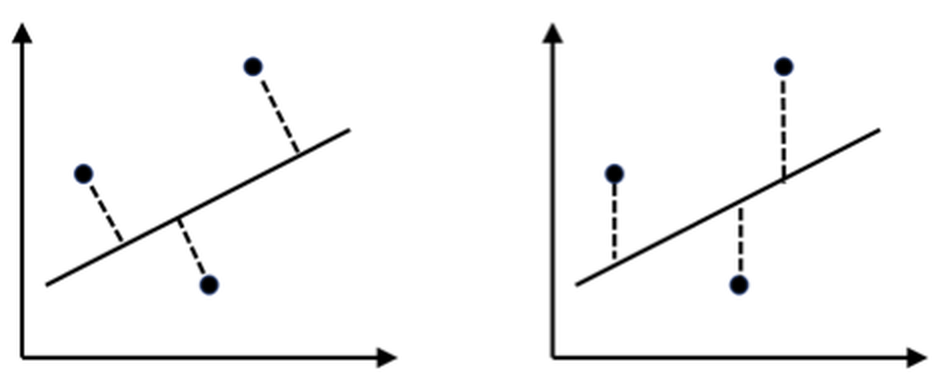
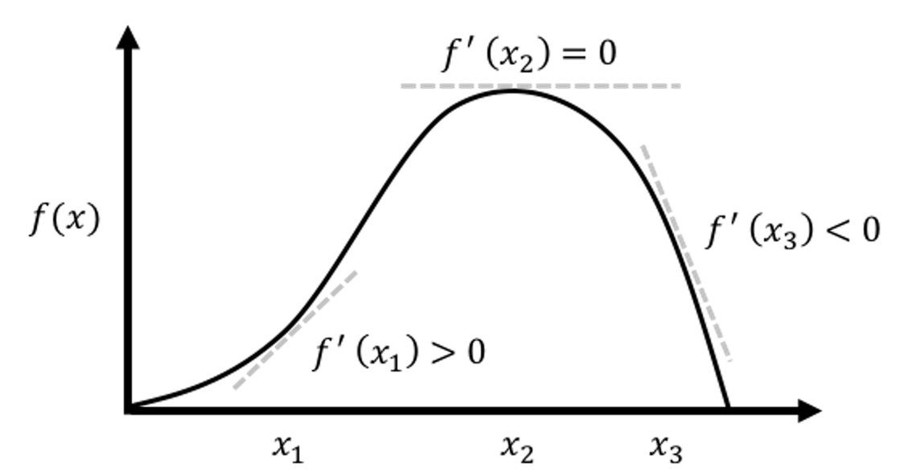
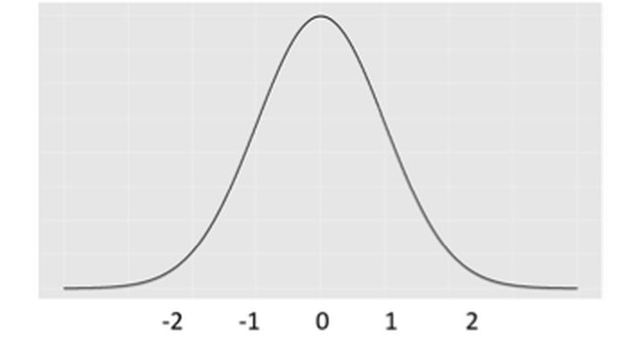
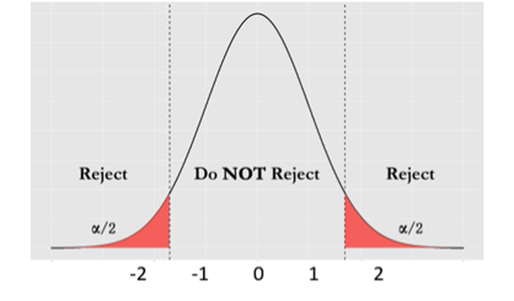
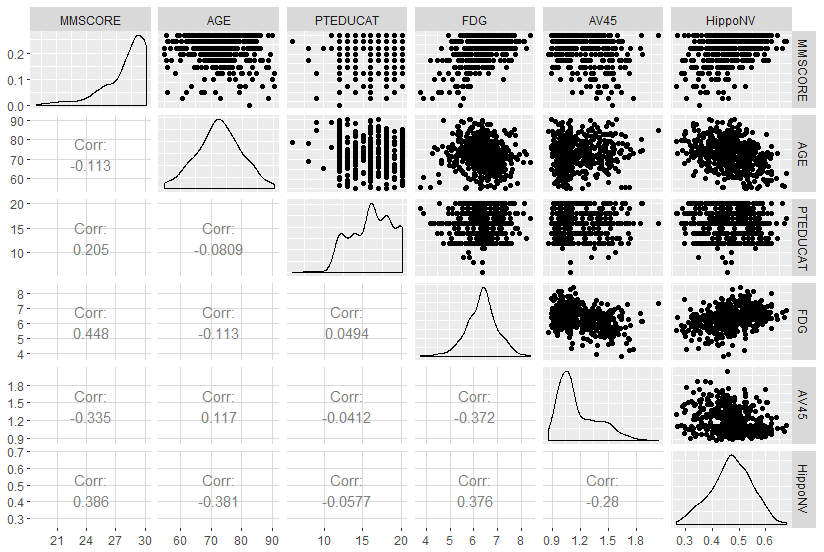
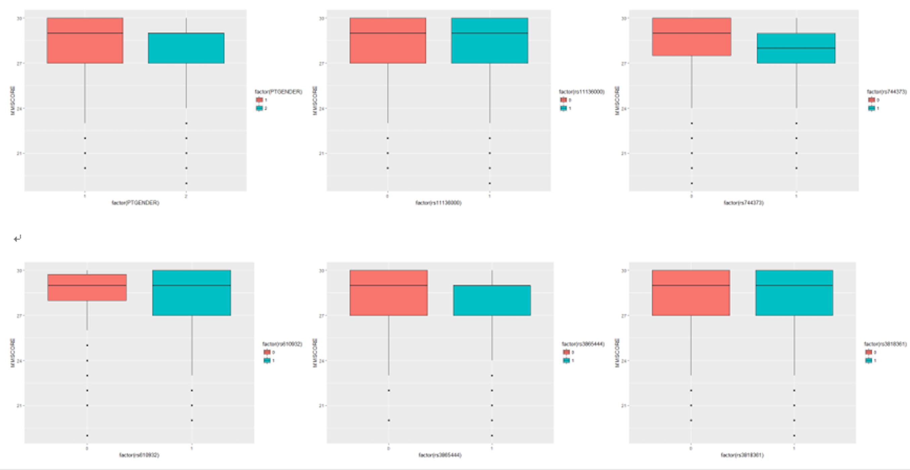
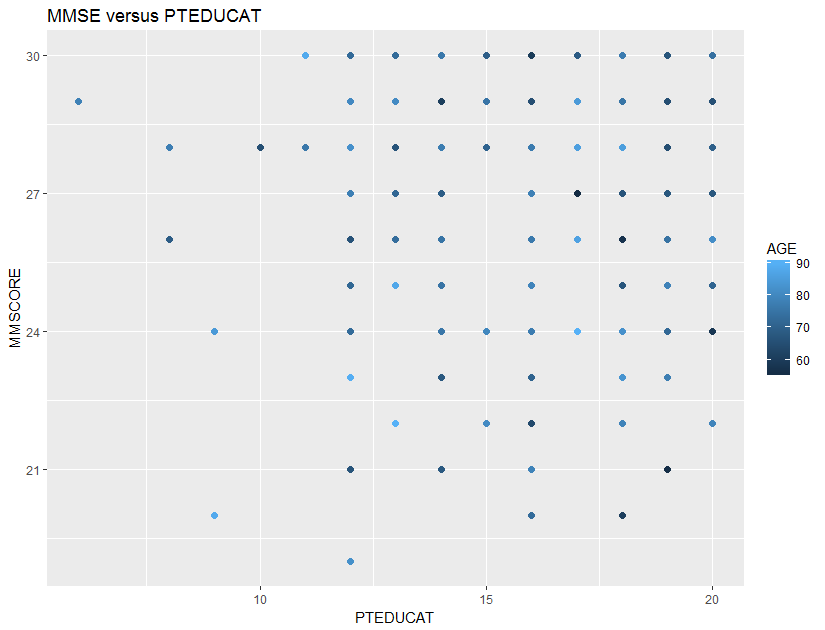

Let’s consider a simple regression model, where there is only one predictor \(x\) to predict the outcome \(y\). Linear regression model assumes a linear form of \(f(x)\)
\[\begin{equation} f(x)=\beta_{0}+\beta_{1} x , \tag{3} \end{equation}\]
where \(\beta_0\) is called the intercept , and \(\beta_1\) is called the slope . Both are also called regression coefficients , or more generally, parameters.
And \(\epsilon\) is modeled as a normal distribution12 I.e., could be other types of distributions, but normal distribution is the norm. with mean \(0\),
\[\begin{equation} \epsilon \sim N\left(0, \sigma_{\varepsilon}^{2}\right), \tag{4} \end{equation}\]
where \(\sigma_{\varepsilon}^{2}\) is the variance of the error.
For any given value of \(x\), we know the model of \(y\) is
\[\begin{equation} y = \beta_{0}+\beta_{1}x + \epsilon. \tag{5} \end{equation}\]
As Figure 5 reveals, in linear regression model, \(y\) is not modeled as a numerical value, but as a distribution. In other words, \(y\) itself is treated as a random variable. Its distribution’s mean is modeled by \(x\) and the variance is inherited from \(\epsilon\). Knowing the value of \(x\) helps us to determine the location of this distribution, but not the shape—the shape is always fixed.
Figure 5: In a linear regression model, \(y\) is modeled as a distribution as well
To make a prediction of \(y\) for any given \(x\), \(\beta_{0}+\beta_{1}x\) comes as a natural choice. It is too natural that it is often unnoticed or unquestioned. Nonetheless, to predict a random variable, using its mean is the “best” choice, but it is not the only possibility, as Figure 5 reveals that \(y\) itself is a random variable, and to predict a random variable, we could also use a confidence interval instead of a point estimate. It depends on what you’d like to predict. If the goal is to predict what is the most likely value for \(y\) given \(x\), then the best guess is \(\beta_{0}+\beta_{1}x\).13 An important job for statisticians is to prove some ideas are our best choices, i.e., by showing that these choices are optimal decisions under some specific conditions (accurately defined by mathematical terms). It is often that intuitions come before proofs, so many theories are actually developed retrospectively.
There are more assumptions that have been made to enable the model in Eq. (5).
\[\begin{equation} \text{R-squared} = \frac{\sigma_{y}^{2}-\sigma_{\varepsilon}^{2}}{\sigma_{y}^{2}}. \tag{6} \end{equation}\] Here, \(\sigma_{y}^{2}\) is the variance of \(y\). The R-squared ranges from \(0\) (zero predictability) to \(1\) (perfect predictability).
Figure 6: Significance vs. accuracy
Parameter estimation. To estimate a model is to estimate its parameters, i.e., for the model shown in Eq. (5), unknown parameters include \(\beta_{0}\), \(\beta_{1}\), and \(\sigma_{\varepsilon}^{2}\). Usually, we estimate the regression coefficients first. Then, as shown in Figure 3, errors could be computed, and further, \(\sigma_{\varepsilon}^{2}\) could be estimated14 I.e., as a standard practice of sample variance estimation by taking the residuals (i.e., \(\epsilon_1\), \(\epsilon_2\) and \(\epsilon_3\)) as samples of the population of error..
A training dataset is collected to estimate the parameters. The basic idea is that the best estimate should lead to a line, as shown in Figure 3, that fits the training data as close as possible. To quantify this quality of fitness of a line, two principles are shown in Figure 7: one based on perpendicular offset (left), while another one based on vertical offset (right). History of statistics has chosen the vertical offset as a more favorable approach, since it leads to tractability in analytic forms15 When there were no computers yet, analytic tractability was, and still is, held as a sacred quality of a model..
Figure 7: Two principles to fit a linear regression model: (left) perpendicular offsets; (right) vertical offsets. The distances between the dots (the training data) with the line (the trained model) provide a quantitative metric of how well the model fits the data.
The principle of minimizing vertical offsets leads to the least-squares estimation of linear regression models. We can exercise the least squares estimation using the simple regression model shown in Eq. (5). The objective, based on the principle suggested in Figure 7 (right), is to find the line that minimizes the sum of the squared of the vertical derivations of the observed data points from the line.
Suppose that we have collected \(N\) data points, denoted as, \(\left(x_{n}, y_{n}\right)\) for \(n=1,2, \dots, N\).16 Data is paired, i.e., \(y_{n}\) corresponds to \(x_{n}\). For each data point, i.e., the \(n_{th}\) data point, the residual \(\epsilon_{n}\) is defined as
\[\begin{equation} \epsilon_{n} = y_{n}-\left(\beta_{0}+\beta_{1} x_{n}\right). \tag{7} \end{equation}\]
Then, we define the sum of the squared of the vertical derivations of the observed data points from the line as
\[\begin{equation} l\left(\beta_{0}, \beta_{1}\right)=\sum_{n=1}^{N}\epsilon_{n}^2. \tag{8} \end{equation}\]
Plugging Eq. (7) in Eq. (8) we have
\[\begin{equation} l\left(\beta_{0}, \beta_{1}\right)=\sum_{n=1}^{N}\left[y_{n}-\left(\beta_{0}+\beta_{1} x_{n}\right)\right]^{2}. \tag{9} \end{equation}\]
To estimate \(\beta_{0}\) and \(\beta_{1}\) is to minimize this least squares loss function \(l\left(\beta_{0}, \beta_{1}\right)\). This is an unconstrained continuous optimization problem. We take derivatives of \(l\left(\beta_{0}, \beta_{1}\right)\) regarding the two parameters and set them to be zero, to derive the estimation equations—this is a common practice of the First Derivative Test, illustrated in Figure 8.
 Figure 8: Illustration of the First Derivative Test in optimization, i.e., the optimal solution would lead the first derivative to be zero. It is widely used in statistics and machine learning to find optimal solutions of some model formulations. More applications of this technique can be found in later chapters.
\[ \frac{\partial l\left(\beta_{0}, \beta_{1}\right)}{\partial \beta_{0}}=-2 \sum_{n=1}^{N}\left[y_{n}-\left(\beta_{0}+\beta_{1} x_{n}\right)\right]=0, \] \[ \frac{\partial l\left(\beta_{0}, \beta_{1}\right)}{\partial \beta_{1}}=-2 \sum_{n=1}^{N} x_{n}\left[y_{n}-\left(\beta_{0}+\beta_{1} x_{n}\right)\right]=0. \]
These two could be rewritten in a more succinct way
\[ \left[ \begin{array}{cc}{N} & {\sum_{n=1}^{N} x_{n}} \\ {\sum_{n=1}^{N} x_{n}} & {\sum_{n=1}^{N} x_{n}^{2}}\end{array}\right] \left[ \begin{array}{c}{\beta_{0}} \\ {\beta_{1}}\end{array}\right]=\left[ \begin{array}{c}{\sum_{n=1}^{N} y_{n}} \\ {\sum_{n=1}^{N} x_{n} y_{n}}\end{array}\right]. \]
We solve these two equations and derive the estimators of \(\beta_{0}\) and \(\beta_{1}\), denoted as \(\hat{\beta}_{0}\) and \(\hat{\beta}_{1}\), respectively, as
\[\begin{equation} \begin{aligned} &\hat{\beta}_{1}=\frac{\sum_{n=1}^{N}\left(x_{n}-\overline{x}\right)\left(y_{n}-\overline{y}\right)}{\sum_{n=1}^{N} x_{n}^{2}-N \overline{x}^{2}}, \\ &\hat{\beta}_{0}= \overline{y} - \hat{\beta}_{1} \overline{x}. \end{aligned} \tag{10} \end{equation}\]
where \(\overline{x}\) and \(\overline{y}\) are the sample mean of the two variables, respectively.
There is a structure hidden inside Eq. (10). Note that the estimator \(\hat{\beta}_{1}\) can be rewritten as
\[\begin{equation} \hat{\beta}_{1}=\frac{\sum_{n=1}^{N}\left(x_{n}-\overline{x}\right)\left(y_{n}-\overline{y}\right)}{N-1} \Big/ \frac{\sum_{n=1}^{N} x_{n}^{2}-N \overline{x}^{2}}{N-1}, \tag{11} \end{equation}\]
and note that the sample variance of \(x\) is defined as
\[ \operatorname{var}(x)=\frac{\sum_{n=1}^{N} x_{n}^{2}-N \overline{x}^{2}}{N-1}, \]
while the numerator in Eq. (11) is called the sample covariance.17 The covariance is a measure of the joint variability of two random variables. Denoted as \(\operatorname{cov}(x, y)\), the larger the covariance, the stronger the two variables interact.
Thus, we can rewrite the estimators of \(\beta_{1}\) and \(\beta_{0}\) as
\[\begin{equation} \begin{aligned} &\hat{\beta}_{1}=\frac{\operatorname{cov}(x, y)}{\operatorname{var}(x)}, \\ &\hat{\beta}_{0} = \overline{y} - \hat{\beta}_{1} \overline{x}. \end{aligned} \tag{12} \end{equation}\]
A small data example. Let’s practice the estimation method using a simple example. The dataset is shown in Table 2.
Table 2: An example dataset
| \(x\) | \(1\) | \(3\) | \(3\) | \(5\) | \(5\) | \(6\) | \(8\) | \(9\) |
|---|---|---|---|---|---|---|---|---|
| \(y\) | \(2\) | \(3\) | \(5\) | \(4\) | \(6\) | \(5\) | \(7\) | \(8\) |
Following Eq. (10) we can get \(\beta_0 = -1.0714\) and \(\beta_1 = 1.2143\). The R codes to verify your calculation are shown below.
# Simple example of regression with one predictor
data = data.frame(rbind(c(1,2),c(3,3),c(3,5),
c(5,4),c(5,6),c(6,5),
c(8,7),c(9,8)))
colnames(data) = c("Y","X")
str(data)
lm.YX <- lm(Y ~ X, data = data)
summary(lm.YX)Extension to multivariate regression model. Consider a more general case where there are more than one predictor
\[\begin{equation} y=\beta_{0}+\sum_{i=1}^{p} \beta_{i} x_{i}+\varepsilon. \tag{13} \end{equation}\]
To fit this multivariate linear regression model with \(p\) predictors, we collect \(N\) data points, denoted as
\[ \boldsymbol{y}=\left[ \begin{array}{c}{y_{1}} \\ {y_{2}} \\ {\vdots} \\ {y_{N}}\end{array}\right], \text { } \boldsymbol{X}=\left[ \begin{array}{ccccc}{1} & {x_{11}} & {x_{21}} & {\cdots} & {x_{p 1}} \\ {1} & {x_{12}} & {x_{22}} & {\cdots} & {x_{p 2}} \\ {\vdots} & {\vdots} & {\vdots} & {\vdots} & {\vdots} \\ {1} & {x_{1 N}} & {x_{2 N}} & {\cdots} & {x_{p N}}\end{array}\right]. \]
where \(\boldsymbol{y} \in R^{N \times 1}\) denotes for the \(N\) measurements of the outcome variable, and \(\boldsymbol{X} \in R^{N \times(p+1)}\) denotes for the data matrix that includes the \(N\) measurements of the \(p\) input variables and the intercept term, \(\beta_{0}\), i.e., the first column of \(\boldsymbol{X}\) corresponds to \(\beta_{0}\).18 Again, the data is paired, i.e., \(y_{n}\) corresponds to \(\boldsymbol{x}_n\) that is the \(n_{th}\) row of the matrix \(\boldsymbol{X}\).
To estimate the regression coefficients in Eq. (13), again, we use the least squares estimation method. The first step is to calculate the sum of the squared of the vertical derivations of the observed data points from “the line”19 Here, actually, a hyperplane.. Following Eq. (7), we can define the residual as
\[\begin{equation} \epsilon_{n} = y_n - \left(\beta_{0}+\sum_{i=1}^{p} \beta_{i} x_{in}\right). \tag{14} \end{equation}\]
Then, following Eq. (8), the sum of the squared of the vertical derivations of the observed data points from “the line” is
\[\begin{equation} l\left(\beta_{0}, ..., \beta_{p}\right)=\sum_{n=1}^{N}\epsilon_{n}^2. \tag{15} \end{equation}\]
This is again an unconstrained continuous optimization problem, that could be solved by the same procedure we have done for the simple linear regression model. Here, we show how a vector-/matrix-based representation of this derivation process could make things easier.
Let’s write up the regression coefficients and residuals in vector forms as
\[ \boldsymbol{\beta}=\left[ \begin{array}{c}{\beta_{0}} \\ {\beta_{1}} \\ {\vdots} \\ {\beta_{p}}\end{array}\right], \text { and } \boldsymbol{\varepsilon}=\left[ \begin{array}{c}{\varepsilon_{1}} \\ {\varepsilon_{2}} \\ {\vdots} \\ {\varepsilon_{N}}\end{array}\right]. \]
Here, \(\boldsymbol{\beta} \in R^{(p+1) \times 1}\) denotes for the regression parameters and \(\boldsymbol{\varepsilon} \in R^{N \times 1}\) denotes for the \(N\) residuals which are assumed to follow a normal distribution with mean as zero and variance as \(\sigma_{\varepsilon}^{2}\).
Then, based on Eq. (14), we rewrite \(\boldsymbol{\varepsilon}\) as \[ \boldsymbol{\varepsilon} = \boldsymbol{y} - \boldsymbol{X} \boldsymbol{\beta}. \]
Eq. (15) could be rewritten as
\[\begin{equation} l(\boldsymbol{\beta})=(\boldsymbol{y}-\boldsymbol{X} \boldsymbol{\beta})^{T}(\boldsymbol{y}-\boldsymbol{X} \boldsymbol{\beta}). \tag{16} \end{equation}\]
To estimate \(\boldsymbol{\beta}\) is to solve the optimization problem
\[ \min _{\boldsymbol{\beta}}(\boldsymbol{y}-\boldsymbol{X} \boldsymbol{\beta})^{T}(\boldsymbol{y}-\boldsymbol{X} \boldsymbol{\beta}). \]
To solve this problem, we can take the gradients of the objective function regarding \(\boldsymbol{\beta}\) and set them to be zero
\[ \frac{\partial(\boldsymbol{y}-\boldsymbol{X} \boldsymbol{\beta})^{T}(\boldsymbol{y}-\boldsymbol{X} \boldsymbol{\beta})}{\partial \boldsymbol{\beta}}=0, \]
which gives rise to the equation
\[ \boldsymbol{X}^{T}(\boldsymbol{y}-\boldsymbol{X} \boldsymbol{\beta})=0. \]
This leads to the least squares estimator of \(\boldsymbol{\beta}\) as
\[\begin{equation} \widehat{\boldsymbol{\beta}}=\left(\boldsymbol{X}^{T} \boldsymbol{X}\right)^{-1} \boldsymbol{X}^{T} \boldsymbol{y}. \tag{17} \end{equation}\]
A resemblance can be easily detected between the estimator in Eq. (17) with Eq. (12), by noticing that \(\boldsymbol{X}^{T} \boldsymbol{y}\) reflects the correlation20 I.e., corresponds to \(\operatorname{cov}(x, y)\). between predictors and output, and \(\boldsymbol{X}^{T} \boldsymbol{X}\) reflects the variability21 I.e., corresponds to \(\operatorname{var}(x)\). of the predictors.
Eq. (17) may come as a surprise to some readers. The regression coefficients, \(\boldsymbol{\beta}\), by their definition, are supposed to only characterize the relationship between \(\boldsymbol{x}\) and \(y\). However, from Eq. (17), it is clear that the variability of \(\boldsymbol{x}\) matters. This is not a contradiction. \(\boldsymbol{\beta}\) and \(\widehat{\boldsymbol{\beta}}\) are two different entities: \(\boldsymbol{\beta}\) is a theoretical concept, while \(\widehat{\boldsymbol{\beta}}\) is a statistical estimate. Statisticians have established theories22 E.g, interested readers may read this book: Ravishanker, N. and Dey, D.K., A First Course in Linear Model Theory, Chapman & Hall/CRC, 2001. to study how well \(\widehat{\boldsymbol{\beta}}\) estimates \(\boldsymbol{\beta}\). From Eq. (17), it is clear that where we observe the linear system23 I.e., from which \(\boldsymbol{x}\) we take measurement of \(y\)’s. matters to the modeling of the system. This is one main motivation of the area called the Design of Experiments that aims to identify the best locations of \(\boldsymbol{x}\) from which we collect observations of the outcome variable, in order to achieve the best parameter estimation results.
By generalizing the result in Figure 5 on the multivariate regression , we can see that \(\boldsymbol{y}\) is a random vector24 “MVN” stands for Multivariate Normal Distribution. See Appendix for background knowledge on MVN.,
\[\begin{equation} \boldsymbol{y} \sim \text{MVN}\left(\boldsymbol{X}^{T}\boldsymbol{\beta},\sigma_{\varepsilon}^{2} \boldsymbol{I}\right). \end{equation}\]
And \(\widehat{\boldsymbol{\beta}}\), as shown in Eq. (17), is essentially a function of \(\boldsymbol{y}\). Thus, \(\widehat{\boldsymbol{\beta}}\) is a random vector as well. In other words, \(\widehat{\boldsymbol{\beta}}\) has a distribution. Because of the normality of \(\boldsymbol{y}\), \(\widehat{\boldsymbol{\beta}}\) is also distributed as a normal distribution.
The mean of \(\widehat{\boldsymbol{\beta}}\) is \(\boldsymbol{\beta}\), because
And the covariance matrix of \(\widehat{\boldsymbol{\beta}}\) is
Because
\[ \operatorname{cov}(\boldsymbol{y}) = \sigma_{\varepsilon}^{2} \boldsymbol{I}, \]
we have
\[ \operatorname{cov}(\widehat{\boldsymbol{\beta}}) = \sigma_{\varepsilon}^{2}\left(\boldsymbol{X}^{T} \boldsymbol{X}\right)^{-1}. \]
Thus, we have derived that
\[\begin{equation} \boldsymbol{y} \sim \text{MVN}\left(\boldsymbol{X}^{T}\boldsymbol{\beta},\sigma_{\varepsilon}^{2} \boldsymbol{I}\right) \Rightarrow \widehat{\boldsymbol{\beta}} \sim \text{MVN}\left[\boldsymbol{\beta},\sigma_{\varepsilon}^{2} \left(\boldsymbol{X}^{T} \boldsymbol{X}\right)^{-1}\right]. \tag{18} \end{equation}\]
For each individual parameter \(\beta_i\), we can infer that
\[\begin{equation} \hat{\beta}_{i} \sim N\left(\beta_{i}, \frac{\sigma_{\varepsilon}^{2}}{\boldsymbol{x}_{i}^T \boldsymbol{x}_{i}}\right) \tag{19} \end{equation}\]
Hypothesis testing of regression parameters. Eq. (19) lays the foundation for developing hypothesis testing of the regression parameters.
A hypothesis testing begins with a null hypothesis, e.g.,
\[ H_{0} : \beta_{i}=0. \]
 Figure 9: The distribution of \(\hat{\beta}_{i}\)
If the null hypothesis is true, then based on Eq. (19), we have
\[\begin{equation} \hat{\beta}_{i} \sim N\left(0, \frac{\sigma_{\varepsilon}^{2}}{\boldsymbol{x}_{i}^T \boldsymbol{x}_{i}}\right). \tag{20} \end{equation}\]
This distribution is shown in Figure 9. It is a graphical display of the possibilities of the values of \(\hat{\beta}_{i}\) that we may observe, if \(H_{0}\) is true.
Then we can derive further implications. Based on Figure 9, we could define a range of \(\hat{\beta}_{i}\) that we believe as most plausible25 Note that I use the word “plausible” instead of “possible.” Any value is always possible, according to Eq. (20). But the possibility is not equally distributed, as shown in Figure 9. Some values are more possible than others.. In other words, if the null hypothesis is true, then it is normal to see \(\hat{\beta}_{i}\) in this range. This thought leads to Figure 10. This is what is supposed to be, if the null hypothesis is true. And any value outside of this range is considered as a result of rare chance, noise, or abnormality. We define a level of probability that represents our threshold of rare chance. We coin this threshold level as \(\alpha\).
 Figure 10: The framework of hypothesis testing
With the threshold level \(\alpha\), we conclude that any value of \(\hat{\beta}_{i}\) that falls outside of the range is unlikely. If we see \(\hat{\beta}_{i}\) falls outside of the range, we reject the null hypothesis \(H_{0}\), based on the conflict between “what is supposed to be” and “what happened to be.”26 I.e., what we have assumed in \(H_{0}\) is what is supposed to be, and what we have observed in data is what happened to be. This framework is shown in Figure 10.
Hypothesis testing is a decision made with risks. We may be wrong: even if the null hypothesis is true, there is still a small probability, \(\alpha\), that we may observe \(\hat{\beta}_{i}\) falls outside of the range. But this is not a blind risk. It is a different kind of risk: we have scientifically derived the risk, understood it well, and accepted the risk as a cost.
In this section, we illustrate step-by-step a pipeline of R codes to use the linear regression model in real-world data analysis. Real-world data analysis is challenging. The real-world means objectivity, but the real-worldliness suggests subjectivity. The purpose of the R codes in this book serves a similar function as a diving coach who dives into the water to show how the action should be done, but the real-worldliness can only be felt if you also dive into the water and feel the thrill by yourself. Our data analysis examples try to preserve a certain degree of the real-worldliness that embodies both statistical regularities and realistic irregularities27 Prof. George Box once said, “all models are wrong, some are useful.”. Only the challenge in many real applications is that the boundary between the statistical regularities and realistic irregularities is unclear and undefined.
Having said that, making informed decisions by drawing from rigorous theories, while at the same time, maintaining a critical attitude about theory, are both needed in practices of data analytics.
Here, our data is from a study of Alzheimer’s disease28 Data were obtained from the Alzheimer’s Disease Neuroimaging Initiative (ADNI) database (http://adni.loni.usc.edu). The ADNI was launched in 2003 as a public-private partnership, led by Principal Investigator Michael W. Weiner, MD. The primary goal of ADNI has been to test whether serial magnetic resonance imaging (MRI), positron emission tomography (PET), other biological markers, and clinical and neuropsychological assessment can be combined to measure the progression of mild cognitive impairment (MCI) and early Alzheimer’s disease (AD). that collected some demographics, genetic, and neuroimaging variables from hundreds of subjects. The goal of this dataset is to use these predictors to predict some outcome variables, e.g., one is called the Mini-Mental State Examination (MMSCORE), which is a clinical score for determining Alzheimer’s disease. It ranges from \(1\) to \(30\), while \(25\) to \(30\) is normal, \(20\) to \(24\) suggests mild dementia, \(13\) to \(20\) suggests moderate dementia, and less than \(12\) indicates severe dementia.
The 5-Step R Pipeline. We start with a pipeline of conducting linear regression analysis in R with 5 steps. Please keep in mind that these 5 steps are not a fixed formula: it is a selection of the authors to make it simple.
Step 1 loads the data into the R work environment.
# Step 1 -> Read data into R workstation
# RCurl is the R package to read csv file using a link
library(RCurl)
url <- paste0("https://raw.githubusercontent.com",
"/analyticsbook/book/main/data/AD.csv")
AD <- read.csv(text=getURL(url))
# str(AD)Step 2 is for data preprocessing. This is a standard chunk of code, and it will be used again in future chapters. As this is the first time we see it, here, let’s break it into several pieces. The first piece is to create your X matrix (predictors) and Y vector (outcome variable). The use of X for predictors and Y for outcome are common practice.
# Step 2 -> Data preprocessing.
# Remove variable DX_bl
AD <- AD[ , -which(names(AD) %in% c("DX_bl"))]
# Pick up the first 15 variables for predictors
X <- AD[,1:15]
# Pick up the variable MMSCORE for outcome
Y <- AD$MMSCOREThen, we make a data.frame to enclose both the predictors and outcome variable together. Many R functions presume the data are packaged in this way.
data <- data.frame(X,Y)
names(data)[16] <- c("MMSCORE")Then, we split the data into two parts29 Usually, there is a client who splits the data for you, sends you the training data only, and withholds the testing data. When you submit your model trained on the training data, the client could verify your model using the testing data. Here, even the dataset we are working on is already the training data, we still split this nominal training data into halves and use one half as the actual training data and the other half as the testing data. Why do we do so? Please see Chapter 5.. We name the two parts as training data and testing data, respectively. The training data is to fit the model. The testing data is excluded from the model training: it will be used to test the model after the final model has been selected using the training data solely.
set.seed(1) # generate the same random sequence
# Create a training data (half the original data size)
train.ix <- sample(nrow(data),floor( nrow(data)/2) )
data.train <- data[train.ix,]
# Create a testing data (half the original data size)
data.test <- data[-train.ix,]Step 3 builds up a linear regression model. We use the lm() function to fit the regression model30 Use lm() for more information..
# Step 3 -> Use lm() function to build a full
# model with all predictors
lm.AD <- lm(MMSCORE ~ ., data = data.train)
summary(lm.AD)The result is shown in below
## Call:
## lm(formula = MMSCORE ~ ., data = data.train)
##
## Residuals:
## Min 1Q Median 3Q Max
## -6.3662 -0.8555 0.1540 1.1241 4.2517
##
## Coefficients:
## Estimate Std. Error t value Pr(>|t|)
## (Intercept) 17.93920 2.38980 7.507 1.16e-12 ***
## AGE 0.02212 0.01664 1.329 0.185036
## PTGENDER -0.11141 0.22077 -0.505 0.614280
## PTEDUCAT 0.16943 0.03980 4.257 2.96e-05 ***
## FDG 0.65003 0.17836 3.645 0.000328 ***
## AV45 -1.10136 0.62510 -1.762 0.079348 .
## HippoNV 7.66067 1.68395 4.549 8.52e-06 ***
## e2_1 -0.26059 0.36036 -0.723 0.470291
## e4_1 -0.42123 0.24192 -1.741 0.082925 .
## rs3818361 0.24991 0.21449 1.165 0.245120
## rs744373 -0.25192 0.20787 -1.212 0.226727
## rs11136000 -0.23207 0.21836 -1.063 0.288926
## rs610932 -0.11403 0.21906 -0.521 0.603179
## rs3851179 0.16251 0.21402 0.759 0.448408
## rs3764650 0.47607 0.24428 1.949 0.052470 .
## rs3865444 -0.34550 0.20559 -1.681 0.094149 .
## ---
## Signif. codes: 0 ‘***’ 0.001 ‘**’ 0.01 ‘*’ 0.05 ‘.’ 0.1 ‘ ’ 1
##
## Residual standard error: 1.63 on 242 degrees of freedom
## Multiple R-squared: 0.3395, Adjusted R-squared: 0.2986
## F-statistic: 8.293 on 15 and 242 DF, p-value: 3.575e-15Step 4 is model selection. There are many variables that are not significant, i.e., their p-values are larger than \(0.05\). The step() function is used for automatic model selection31 Use help(step) for more information., i.e., it implements a brute-force approach to identify the best combinations of variables in a linear regression model.
# Step 4 -> use step() to automatically delete
# all the insignificant variables
# Automatic model selection
lm.AD.reduced <- step(lm.AD, direction="backward", test="F")And the final model the step() function identifies is
## Step: AIC=259.92
## MMSCORE ~ PTEDUCAT + FDG + AV45 + HippoNV + e4_1 + rs744373 +
## rs3764650 + rs3865444
##
## Df Sum of Sq RSS AIC F value Pr(>F)
## <none> 658.95 259.92
## - rs744373 1 6.015 664.96 260.27 2.2728 0.132934
## - AV45 1 7.192 666.14 260.72 2.7176 0.100511
## - e4_1 1 8.409 667.36 261.19 3.1774 0.075882 .
## - rs3865444 1 8.428 667.38 261.20 3.1848 0.075544 .
## - rs3764650 1 10.228 669.18 261.90 3.8649 0.050417 .
## - FDG 1 40.285 699.24 273.23 15.2226 0.000123 ***
## - PTEDUCAT 1 44.191 703.14 274.67 16.6988 5.913e-05 ***
## - HippoNV 1 53.445 712.40 278.04 20.1954 1.072e-05 ***
## ---
## Signif. codes: 0 ‘***’ 0.001 ‘**’ 0.01 ‘*’ 0.05 ‘.’ 0.1 ‘ ’ 1It can be seen that the predictors that are kept in the final model are all significant. Also, the R-squared is \(0.3228\) using the \(8\) selected predictors. This is not bad comparing with the R-squared, \(0.3395\), when all the \(15\) predictors are used (we call this model the full model).
We compare the full model with the final model using the F-test that is implemented in anova().
anova(lm.AD.reduced,lm.AD)The returned result, shown below, implies that it is statistically indistinguishable between the two models (p-value of the F-test is \(0.529\)). The model lm.AD.reduced provides an equally good explanation of the data as the full model does, but lm.AD.reduced is more economic. The principle of Occam’s razor32 “Other things being equal, simpler explanations are generally better than more complex ones,” is the basic idea of Occam’s razor. Albert Einstein was also quoted with a similar expression: “Everything should be made as simple as possible, but no simpler.” would consider the model lm.AD.reduced more in favor.
## Analysis of Variance Table
##
## Model 1: MMSCORE ~ PTEDUCAT + FDG + AV45 + HippoNV +
## e4_1 + rs744373 + rs3764650 + rs3865444
## Model 2: MMSCORE ~ AGE + PTGENDER + PTEDUCAT + FDG + AV45 +
## HippoNV + e2_1 + e4_1 + rs3818361 + rs744373 + rs11136000 +
## rs610932 + rs3851179 + rs3764650 + rs3865444
## Res.Df RSS Df Sum of Sq F Pr(>F)
## 1 249 658.95
## 2 242 642.73 7 16.218 0.8723 0.529Step 5 makes prediction. We can use the function predict()33 predict(obj, data) which is a function you can find in many R packages. It usually has two main arguments: obj is the model, and data is the data points you want to predict on. Note that, here, we test the model (that was trained on training data) on the testing data. After gathering the predictions, we use the function cor() to measure how close are the predictions with the true outcome values of the testing data. The higher the correlation, the better the predictions.
# Step 5 -> Predict using your linear regession model
pred.lm <- predict(lm.AD.reduced, data.test)
# For regression model, you can use correlation to measure
# how close your predictions with the true outcome
# values of the data points
cor(pred.lm, data.test$MMSCORE)Beyond the 5-Step Pipeline. The Exploratory Data Analysis (EDA) is a practical toolbox that consists of many interesting and insightful methods and tools, mostly empirical and graphical. The idea of EDA was promoted by some statisticians34 E.g., John W. Tukey was a statistician whose career was known to be an advocate of EDA. See his book: Exploratory Data Analysis, Addison-Wesley Publishing Co., 1977.. The EDA could be used before and after we have built the model. For example, a common practice of EDA is to draw the scatterplots to see how potentially the predictors can predict the outcome variable.
# Scatterplot matrix to visualize the relationship
# between outcome variable with continuous predictors
library(ggplot2)
# install.packages("GGally")
library(GGally)
# draw the scatterplots and also empirical
# shapes of the distributions of the variables
p <- ggpairs(AD[,c(16,1,3,4,5,6)],
upper = list(continuous = "points"),
lower = list(continuous = "cor"))
print(p)
library(ggplot2)
qplot(factor(PTGENDER),
MMSCORE, data = AD,geom=c("boxplot"), fill = factor(PTGENDER))Figure 11 presents the continuous predictors.
Figure 11: Scatterplots of the continuous predictors versus outcome variable
For the other predictors which are binary, we can use a boxplot, which is shown in Figure 12.
Figure 12: Boxplots of the binary predictors versus outcome variable
In what follows we show another case of EDA.
Consider the relationship between MMSCORE and PTEDUCAT, and find a graphical way to investigate if the predictor, AGE, mediates the relationship between MMSCORE and PTEDUCAT. One way to do so is to color the data points in the scatterplot (i.e., the color corresponds to the numerical scale of AGE). The following R codes generate Figure 13.
# How to detect interaction terms
# by exploratory data analysis (EDA)
require(ggplot2)
p <- ggplot(AD, aes(x = PTEDUCAT, y = MMSCORE))
p <- p + geom_point(aes(colour=AGE), size=2)
# p <- p + geom_smooth(method = "auto")
p <- p + labs(title="MMSE versus PTEDUCAT")
print(p)

Figure 13: Scatterplots of MMSCORE versus PTEDUCAT
It looks like that the relationship between MMSCORE and PTEDUCAT indeed changes according to different levels of AGE. While this is subtle, we change the strategy and draw two more figures, i.e., we draw the same scatterplot on two levels of AGE, i.e., AGE < 60 and AGE > 80. The following R codes generate Figure 14.
p <- ggplot(AD[which(AD$AGE < 60),],
aes(x = PTEDUCAT, y = MMSCORE))
p <- p + geom_point(size=2)
p <- p + geom_smooth(method = lm)
p <- p + labs(title="MMSE versus PTEDUCAT when AGE < 60")
print(p)p <- ggplot(AD[which(AD$AGE > 80),],
aes(x = PTEDUCAT, y = MMSCORE))
p <- p + geom_point(size=2)
p <- p + geom_smooth(method = lm)
p <- p + labs(title="MMSE versus PTEDUCAT when AGE > 80")
print(p)
Figure 14: Scatterplots of MMSCORE versus PTEDUCAT when (left) AGE < 60 or (right) AGE > 80
Figure 14 shows that the relationship between MMSCORE and PTEDUCAT changes dramatically according to different levels of AGE. In other words, it means that the way the predictor PTEDUCAT impacts the outcome MMSCORE is not simply additive as a regular linear regression model would suggest. Rather, the relationship between the two is modified by AGE. This discovery suggests a different mechanism underlying the three variables, as demonstrated in Figure 15.
We then add an interaction term into the regression model
# fit the multiple linear regression model
# with an interaction term: AGE*PTEDUCAT
lm.AD.int <- lm(MMSCORE ~ AGE + PTGENDER + PTEDUCAT
+ AGE*PTEDUCAT, data = AD)
summary(lm.AD.int)We can see that this interaction term is significant .
Figure 15: Different data-generating mechanisms: (left) additive relationships between predictors and outcome; (right) additive relationships and interaction
##
## Call:
## lm(formula = MMSCORE ~ AGE + PTGENDER
## + PTEDUCAT + AGE * PTEDUCAT,
## data = AD)
##
## Residuals:
## Min 1Q Median 3Q Max
## -8.2571 -0.9204 0.5156 1.4219 4.2975
##
## Coefficients:
## Estimate Std. Error t value Pr(>|t|)
## (Intercept) 40.809411 5.500441 7.419 4.93e-13 ***
## AGE -0.202043 0.074087 -2.727 0.00661 **
## PTGENDER -0.470951 0.187143 -2.517 0.01216 *
## PTEDUCAT -0.642352 0.336212 -1.911 0.05662 .
## AGE:PTEDUCAT 0.011083 0.004557 2.432 0.01534 *
## ---
## Signif. codes: 0 '***' 0.001 '**' 0.01 '*' 0.05 '.' 0.1 ' ' 1
##
## Residual standard error: 2.052 on 512 degrees of freedom
## Multiple R-squared: 0.07193, Adjusted R-squared: 0.06468
## F-statistic: 9.92 on 4 and 512 DF, p-value: 9.748e-08